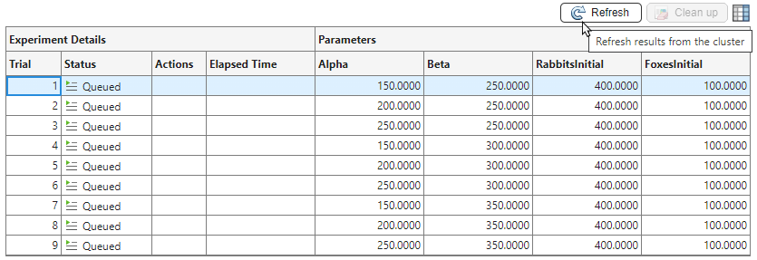
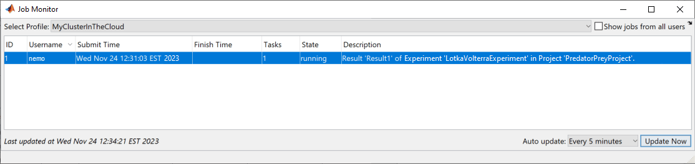
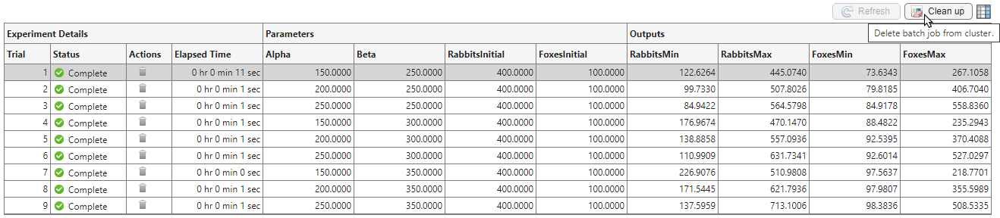

Offload Experiments as Batch Jobs to a Cluster
By default, Experiment Manager runs your experiments interactively, so you can monitor the progress of each trial by inspecting the results table. However, running an experiment interactively limits your access to MATLAB® functionality.
If you have Parallel Computing Toolbox™ and MATLAB Parallel Server™, you can send your experiment as a batch job to a remote cluster. While the experiment is running in the cluster, you can:
Run another experiment interactively or start another batch job using the same experiment, a different experiment in the same project, or an experiment in a different project.
Close the Experiment Manager app and continue using MATLAB.
Close your MATLAB session.
If you only have Parallel Computing Toolbox, you can use a local cluster profile to develop and test your experiments on your client machine instead of running them on a network cluster. If you close your MATLAB session, any batch jobs using the local cluster profile also stop immediately.
Create Batch Job on Cluster
To start a batch job for your experiment:
Configure your experiment.
Tip
Load data for your experiment from a location that is accessible to all your parallel workers. For example, store your data outside the project and access the data by using an absolute path. Alternatively, create a datastore object that can access the data on another machine by setting up the
AlternateFileSystemRootsproperty of the datastore. For more information, see Set Up Datastore for Processing on Different Machines or Clusters.In the Experiment Manager toolstrip, under Execution, use the Mode list to specify an execution mode:
To run one trial of the experiment at a time, select
Batch Sequential.To run multiple trials at the same time, select
Batch Simultaneous.
Use the Cluster list to select a cluster profile to use for your batch job. To create and manage cluster profiles, open the Cluster Profile Manager. For more information, see Discover Clusters and Use Cluster Profiles (Parallel Computing Toolbox).
In the Pool Size field, enter the number of workers for your batch job.
If Mode is
Batch Sequential, use this field to configure the number of parallel workers that collaborate on each trial of the experiment. If you set the pool size to0, the experiment runs on a single worker.If Mode is
Batch Simultaneous, use this field to specify the number of trials that the cluster runs at the same time.
Because Experiment Manager uses an additional worker to run the batch job, the cluster must have at least one more worker available than the number you specify in the Pool Size field. For example, if you specify a pool size of
2, the cluster must have at least three workers available: two workers for the experiment and an additional worker to run the batch job. For more information, see Run Batch Job with Parallel Pool (Parallel Computing Toolbox).Click Run
 . Experiment Manager uses the
. Experiment Manager uses the batch(Parallel Computing Toolbox) function to run the experiment in the specified cluster.
While the batch job runs your experiment, you can close Experiment Manager and recover the results later.
Track Progress of Batch Job
When you run a batch job for an experiment, Experiment Manager does not continually communicate with the cluster to update the values in the results table and save the visualizations for your experiment. Instead, you retrieve this information from the cluster by clicking the Refresh button above the results table.

To monitor batch jobs without opening the Experiment Manager app, use the Job Monitor (Parallel Computing Toolbox). The Job Monitor tells you whether your batch job is queued, running, or finished.

Note
Using the Job Monitor to cancel or delete jobs that you create with Experiment Manager can lead to unexpected behavior. Instead, cancel and delete these batch jobs by using Experiment Manager.
Cancel Batch Job
To cancel a batch job running an experiment, in the Experiment Manager
toolstrip, click Cancel
. Experiment Manager marks any running and queued
trials as Canceled and discards their results.
Batch execution does not support stopping, canceling, or restarting individual trials of an experiment.
Delete Batch Job
To avoid consuming resources unnecessarily, delete the job from the cluster by clicking the Clean up button above the results table.

See Also
Apps
- Experiment Manager | Job Monitor (Parallel Computing Toolbox)
Functions
batch(Parallel Computing Toolbox)
Topics
- Run Batch Parallel Jobs (Parallel Computing Toolbox)
- Discover Clusters and Use Cluster Profiles (Parallel Computing Toolbox)
- Use Parallel Computing Toolbox with Cloud Center Cluster in MATLAB Online (Parallel Computing Toolbox)